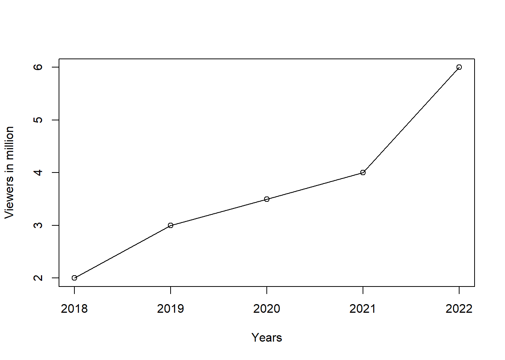
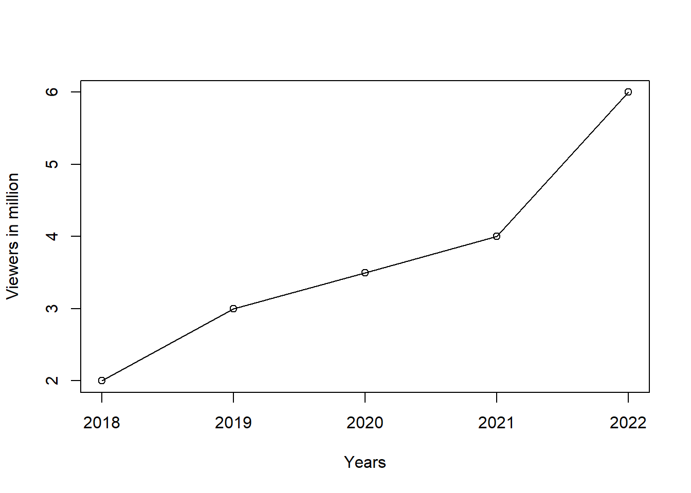

years = c(2018, 2019, 2020, 2021, 2022)
viewers = c(2, 3, 3.5, 4, 6)
plot(years,viewers,type = "o",xlab="Years", ylab="Viewers in million")
##plot(v,type,col,xlab,ylab)
message("You will not see the message.")Money Heist (Spanish: La casa de papel, [la ˈkasa ðe paˈpel], lit. ‘The House of Paper’) is a Spanish heist crime drama television series created by Álex Pina. The series traces two long-prepared heists led by the Professor (Álvaro Morte), one on the Royal Mint of Spain, and one on the Bank of Spain, told from the perspective of one of the robbers, Tokyo (Úrsula Corberó). The story is told in a real-time-like fashion and relies on an unreliable narrator, flashbacks, time-jumps and hidden character motivations for complexity.[2][3][4]
Cast and characters| Role | Portrayed by | |
|---|---|---|
| Silene Oliveira (Tokyo) | Úrsula Corberó | a runaway turned robber who is scouted by the Professor, then joins his group and participates in his plans. She also acts as the narrator. |
| Sergio Marquina (The Professor) / Salvador “Salva” Martín | Álvaro Morte | the mastermind of the heist who assembled the group, and Berlin’s younger brother |
| Raquel Murillo (Lisbon) | Itziar Ituño | an inspector of the National Police Corps who is put in charge of the case |
| Andrés de Fonollosa (Berlin) | Pedro Alonso | a terminally ill jewel thief and the Professor’s second-in-command and older brother |
| Agustín Ramos (Moscow) | Paco Tous | (parts 1–2; featured parts 3–5): a former miner turned criminal and Denver’s father |
| Ágata Jiménez (Nairobi) | Alba Flores | an expert in counterfeiting and forgery, in charge of printing the money and oversaw the melting of gold |
| Aníbal Cortés (Rio) | Miguel Herrán | a young hacker who later becomes Tokyo’s boyfriend |
| Ricardo / Daniel Ramos (Denver) | Jaime Lorente | Moscow’s son who joins him in the heist |
| Mónica Gaztambide (Stockholm) | Esther Acebo | one of the hostages in the Mint who is Arturo Román’s secretary and mistress, carrying his child out of wedlock; during the robbery, she falls in love with Denver and becomes an accomplice to the group |
| Arturo Román | Enrique Arce | a hostage and the former Director of the Royal Mint of Spain |
| Alison Parker | María Pedraza | (parts 1–2): a hostage in the Mint and daughter of the British ambassador to Spain |
| Mirko Dragic (Helsinki) | Darko Perić | a Serbian army veteran and Oslo’s cousin |
| Mariví Fuentes | Kiti Mánver | (parts 1–2; featured parts 3–4): Raquel’s mother |
| Santiago Lopez (Bogotá) | Hovik Keuchkerian | an expert in metallurgy who joins the robbery of the Bank of Spain |
| Jakov (Marseille) | Luka Peroš | (parts 4–5; featured part 3): a member of the gang who joins the robbery of the Bank of Spain and serves as a liaison for the group. |
| Julia Martinez (Manila) | Belén Cuesta | (parts 4–5; featured part 3): godchild of Moscow and Denver’s childhood friend, a trans woman, who joins the gang and poses as one of the hostages during the robbery of the Bank of Spain |
| Colonel Luis Tamayo | Fernando Cayo | (part 4–5; featured part 3): a member of the Spanish Intelligence who oversees Alicia’s work on the case |
| Martín Berrote (Palermo / The Engineer) | Rodrigo de la Serna | (parts 3–5): an old Argentine friend of Berlin who planned the robbery of the Bank of Spain with him and assumed his place as commanding officer |
| Alicia Sierra | Najwa Nimri | (parts 3–5): a pregnant inspector of the National Police Corps put in charge of the case after Raquel departed from the force |
years = c(2018, 2019, 2020, 2021, 2022)
viewers = c(2, 3, 3.5, 4, 6)
plot(years,viewers,type = "o",xlab="Years", ylab="Viewers in million")
##plot(v,type,col,xlab,ylab)
message("You will not see the message.")